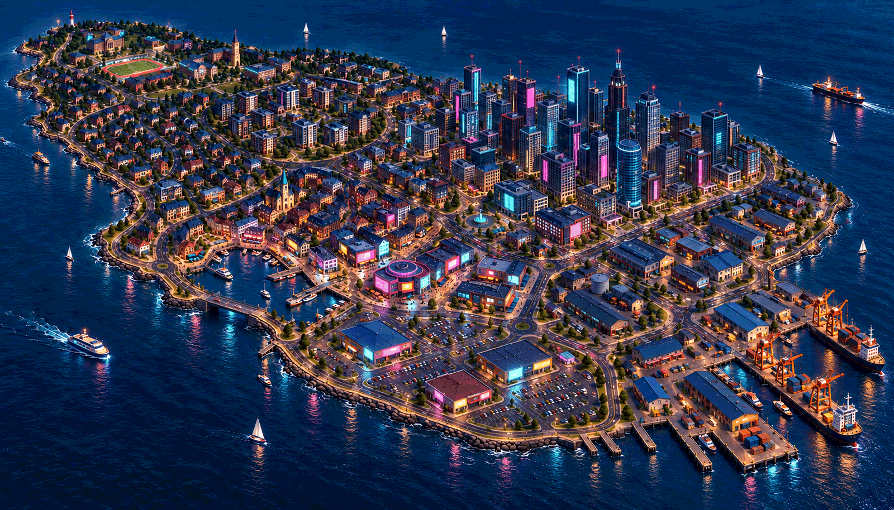

CYBERPUNK EXPLORATION
The same city, after dark
Indigo, cyan and magenta · warm harbour lights · industrial amber

The campus, housing, old harbour, larger downtown, retail car parks and working docks keep their positions. The bridge still crosses an open water entrance to the marina.
The selected blue-hour / early-night mood replaces the earlier daytime-only visual target. The fixed lighting setup, signs, reflections, bloom and actor contrast still need actual-camera validation; no day/night system is requested. This is generated reference art, not an engine capture.